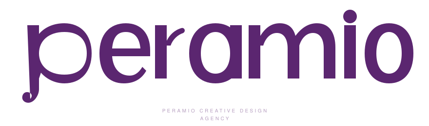
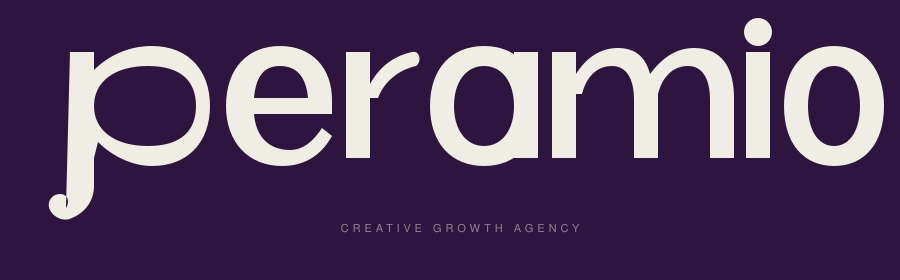
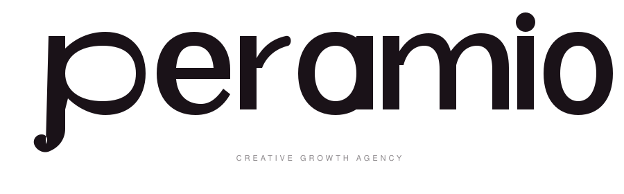
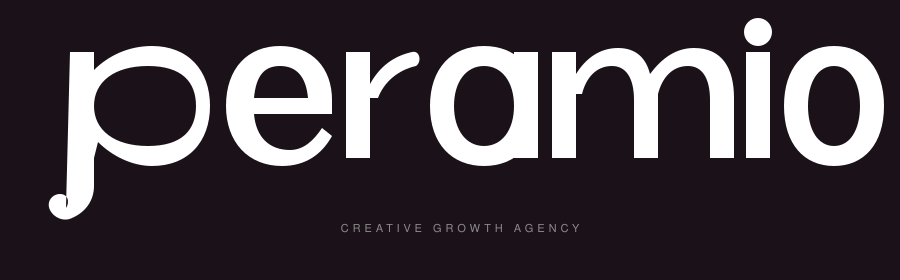
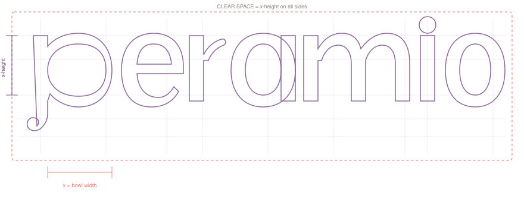

01 — Logo
Ana logo ve varyasyonlar
Ana Logo
Peramio wordmark'i, custom geometrik letterform'lardan olusan lowercase bir wordmark'tir. "p" harfinin kıvrılan descender'ı markanın imza detayıdır.
Logo Varyasyonlari
Farkli arka planlar ve kullanim senaryolari icin optimize edilmis versiyonlar.

Beyaz Zemin

Koyu Zemin

Tek Renk — Siyah

Tek Renk — Beyaz
Logo Icon
Favicon, app icon ve profil fotografı olarak kullanilacak "p" ikonu.
Construction Grid
Logonun geometrik yapisi ve clear space kurallari. Logo etrafinda en az x-height kadar bos alan birakilmalidir.

Minimum Boyut
Dijitalde minimum 120px genislik, baskilarda minimum 30mm genislik.
120px — Minimum (Dijital)
240px — Standart